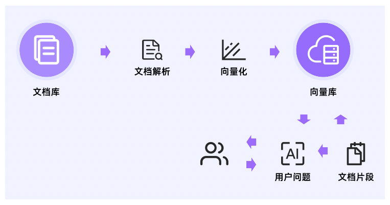
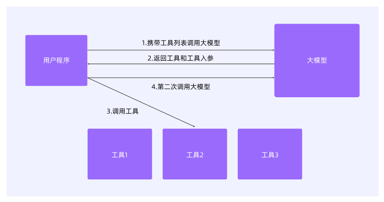

本书作者：测试开发刚哥，文章版权归个人所有，未经授权请勿转载。
2.1 模型
大模型扮演着大脑的角色，负责核心的理解、推理与生成任务。
2.1.1 模型分类
通用大模型：GPT、Claude、Qwen、DeepSeek、Gemini 等通用大模型。
垂直领域模型：情感分析、语言翻译、意图分类等垂直领域模型。
通用大模型适合处理复杂、开放的任务，垂直领域模型适合处理简单、高频的任务。
2.1.2 模型能力和微调
模型的知识是固化的，需要不断地“喂”它，把这些信息结构化地描述清楚并且提供给它，它会在每次的交互中动态地理解你提供的内容，并结合自身的通用知识来完成内容的生成。
企业专属模型的训练和微调的成本是巨大的，它不仅包括高昂的计算资源费用，还需要海量的高质量标注数据、专业的算法团队以及漫长的开发周期。对于绝大多企业来说，投入与产出不成正比，很难持续。
2.1.3 如何选择模型
基于企业的实际业务场景，权衡任务复杂度、性能要求、开发成本和响应延迟等多个因素来综合选择和组合最合适的模型。
一个务实的策略是从顶配开始，逐步优化：先用能力最强的模型搭建原型以验证业务逻辑，再逐步将流程中的非核心、简单任务替换为更经济、更快速的小模型，最终找到成本与性能的最佳平衡点。
2.2 框架
Spring 或 Dubbo 开发一个微服务应用，代码确定，容易形成标准化的框架。而开发一个 AI Agent 应用，LLM 存在高度不确定性，设计模式的落地方式差异很大。
2.2.1 Agent 设计模式
1、Chain of Thought（思维链）
让模型在回答前，把推理过程一步步写出来。
2、Self-Ask（自问自答）
让模型在回答时学会反问自己，把大问题拆成多个小问题，然后逐个回答。
3、ReAct（推理+行动）
在推理和外部行动（比如调用搜索引擎或 API）之间交替进行。
4、Plan-and-Execute（计划与执行）
把任务拆成两个阶段，先生成计划，再逐步执行。
5、Tree of Thoughts（ToT，树状思维）
不是单线思维，而是生成多条思路分支，像树一样展开，再通过评估机制选出最佳分支。
6、Reflexion / Iterative Refinement（反思与迭代优化）
Agent 自我纠错，犯错后会总结失败原因，再带着反思尝试下一次。
7、Role-playing Agents（角色扮演式智能体）
把任务拆分给不同角色的 Agent，通过对话协作完成任务。
这些模式不是互斥的，可以混搭使用。
其中 ReAct 已经被 LangChain、LlamaIndex、Dify、Spring AI Alibaba 等开发框架内置为基础框架。
2.2.2 Agent 开发框架
1、从低代码到高代码
低代码平台是对于高代码的一层封装，其抽象层次很难满足所有场景，无法在性能、扩展性和复杂业务逻辑方面满足大规模生产的要求。
高代码是当下 AI 原生应用生产落地的主流形态，ADK、LangGraph、AutoGen、AgentScope、Spring AI Alibaba 等框架，为开发者提供了面向 Agent 的编程接口。
2、高代码的演进
高代码模式本身经历了从 ChatClient→Workflow→Agentic 的演进过程。
ChatClient，一次单一的 LLM 调用。Workflow，将传统工作流转化为 LLM 节点编排。Agentic，提供面向 Agent 的 API，并内置多种通用的协作模式（Pattern）。
3、零代码的愿景
尝试让用户完全通过自然语言即可驱动开发。目前处于探索与验证阶段，难以承担大规模生产任务。
2.3 提示词
在 AI 原生应用中，不再编写复杂的代码，而是使用更接近人类语言的方式与 AI 沟通，这就是 Prompt（提示词）。提示词的质量很大程度上影响了 AI 应用的输出效果。
2.3.1 提示词是什么
提示词可以是一个具体的问题、一段描述、一组关键词，或是相关的上下文，不仅限于自然语言文本，还可以包含代码片段、数据格式说明，甚至是图像与文字相结合的多模态输入。
2.3.2 提示词质量=AI 输出质量
大模型的输出质量，既要看大模型本身，也要看提示词是否清晰、完整、具体。比如，“写点关于人工智能的东西”，生成的内容是泛泛而谈。“以科技专栏作家的身份，撰写一篇 800 字左右的文章，探讨人工智能在医疗影像诊断中的最新应用、优势与挑战，并列举实例”，能生成一篇逻辑严谨、信息详实、专业度高的文章。
2.3.3 如何优化提示词
开发者需要清晰、有效地与模型交流，并明确指导它如何处理各自情况，在第 4 章中将围绕上下文工程对提示词展开详细介绍。
2.4 RAG
RAG（Retrieval Augmented Generation，检索增强生成）用于构建大模型的知识库。RAG 技术能够弥补大模型因知识截止而无法获取最新信息的问题，并有效降低其产生幻觉的风险，而且 RAG 技术相比于大模型后训练或微调方式，以更加成本低的方式与企业的专有数据作对接，以实现大模型快速技术验证和商业化尝试。
2.4.1 RAG 知识库的应用架构

1、离线向量过程：把用户上传的文档进行文档智能解析、切片，再进行向量化存储到向量数据库。
2、在线过程：把用户的请求问题向量化之后与向量库中的切片向量进行相似度对比，从而召回最接近用户问题的相关切片。
一个简单的 RAG 系统可能会遭遇准确率和召回率的挑战、信息冗余噪声导致的模型幻觉、知识库庞杂难以管理等问题。当前 RAG 系统的构建也逐步向模块化、Agentic RAG 的高级架构演进。

1、离线过程，文档解析技术除了 OCR 和电子解析技术，也利用大模型进行解析，比如图片类文档使用 VLM 视觉理解大模型。
2、在线检索过程，检索前、检索中、检索后都发展出很多技术手段，比如检索前增加 Query 改写、知识库路由等模块，检索过程采用检索策略，检索后增加重排序、拒识模块等。
2.4.2 RAG 知识库的应用场景
客户服务、个性化推荐、AI 陪伴、内容创作等。除了简单的问答，基于 RAG 的系统，叠加大模型分析客户对话数据等能力，能帮助企业优化服务策略和挖掘销售线索等。多模态 RAG 的兴起，可以在零售电商场景，让用户通过上传图片来检索商品；在媒体娱乐领域，从海量音视频中检索出特定片段，服务于内容分发以及 AI 视频创作场景。
2.4.3 RAG 知识库技术的未来发展
在当前 Advanced RAG 架构里，仍然有许多问题待解决。多模态 RAG 相关的技术，也还在快速发展当中。RAG 系统中的知识库向量检索，也是上下文工程的核心技术实现，在第 4 章将围绕上下文工程对 RAG 展开详细的介绍。
2.5 记忆
在使用 DeepSeek 时，查看历史对话，就是 AI 应用的记忆功能。
2.5.1 记忆的核心作用
大模型本质上是无状态的，AI 原生应用引入了记忆组件，从一个单轮问答的机器人，成长为能与我们长期协作、处理复杂任务的智能伙伴。
1、跨越会话的连贯性
长期保存关键信息（如对话历史、任务状态、决策依据），并通过高效的检索与上下文注入机制，在新的交互中动态地为模型提供相关背景。
2、高度自适应的个性化
构建和维护动态的用户画像来实现个性化。系统地记录用户的偏好，如格式要求、沟通风格等，也能记住历史行为模式与长期目标，使模型能够生成高度定制化的输出。
3、基于历史信息的深度推理
借助记忆提供的历史知识和经验充当推理的证据库，当模型在决策时，能关联并整合分散在历史中的相关数据、相似案例或既有结论。
2.5.2 短期记忆和长期记忆
短期记忆保证了交互的即时性与上下文的完整性，长期记忆则提供跨会话的知识背景。
短期记忆（Short-Term Memory，STM）
模型在单次、连续的交互会话中所能直接访问的信息。
长期记忆（Long-Term Memory，LTM）
让 AI 能够记住跨越不同会话，甚至数天数月前的信息。系统将需要长期保存的信息，如对话摘要、用户画像或外部文档，进行向量化处理，并存入专门的向量数据库进行索引。当新的交互发生时，系统会根据当前输入的语义，在数据库中高效检索出最相关的历史记忆片段，并将其作为背景知识动态加入到模型的输入中。也就是外部数据库和语义检索的机制。
2.6 工具
LLM 的知识是静态的，其知识内容截止于其训练数据的最后更新日期。模型本身也无法直接与外部系统交互，执行如发送电子邮件、预定航班或执行数据库查询等实际操作。需要借助工具来实现，工具本质上是可以调用的外部接口。
2.6.1 如何调用工具
大模型本身不能调用工具，它是根据用户的输入和可用工具的描述，智能地判断并决定调用哪个工具以及传递哪些参数。

OpenAI 率先在其推理 API 接口中支持了 Function Calling（后升级为 Tools），函数调用，核心是让大模型生成调用外部 API 的结构化入参。开发者预先把工具信息提供给大模型，通常是 JSON Schema 形式，包括函数名称、功能描述和参数列表。当用户请求时，大模型分析意图，判断是否需要调用工具以及调用哪个工具，生成一个包含 tool_calls 字段的结构化 JSON 对象。应用程序拿到后，就可以解析并调用相应的工具。
2.6.2 MCP 协议
MCP，Model Context Protocol，模型上下文协议，是由 Anthropic 公司 2024 年推出的，为大模型与外部数据、应用和服务之间的通信提供一种安全且标准化的语言。MCP 协议迅速地成为当前大模型供应商的标准协议，包括 OpenAI、Google、阿里云百炼在内的模型服务商，都对 MCP 做了兼容性支持。
MCP 服务有很多托管平台，MCP 社区为了统一，定义了 MCP Registry，标准化服务器的分发和发现方式，使 Agent 和工具更容易连接，近期发布了 Preview 版本，用于公开可用的 MCP 服务器的开放目录和 API。Nacos 也开源了 Nacos MCP Registry，定位私有化，方便企业内部部署。
2.6.3 工具调用的挑战和发展
当前工具调用存在调用时延、工具提取参数准确性、安全鉴权等问题，长远来看都将被有效解决，大模型将更智能地组合和串联多个工具完成更复杂的跨领域任务。
2.7 网关
AI 网关用来解决模型切换、Token 经济、语义缓存和内容风控等 AI 原生的需求。
2.7.1 什么是 AI 网关
AI 网关是一个专为 AI 应用设计的、位于应用和大模型之间、应用和工具之间、模型和模型之间的中间件。其核心职责不再仅仅是路由和保护 RESTful API，而是要理解并管理以 Token 为中心的、高延迟、流式传输的流量。
（AI Token 跟我们常说的登录 token 不是一个概念，Token 翻译过来也可以叫符号，对 AI 来说是将文本分解后的基本单元，类似于将句子拆分成词汇或字符的过程）
2.7.2 统一的模型接入与厂商解耦
不同供应商（如 OpenAI、Anthropic、DeepSeek）的 API 标准各异，AI 网关需要提供统一规范的 API，将所有模型的接口都转换成一个标准的、统一的接口对外服务。开发者无需为新模型编写定制代码，方便进行模型切换、A/B 测试和组合模型等。
2.7.3 融合存量系统与 AI
AI 网关能通过其协议抽象层扫描 REST、GraphQL、gRPC 等存量服务的 API 规范（如 Swagger），自动生成符合大模型工具调用（如 MCP 规范）的描述文件，并借助 MCP Registry 注册到统一的服务目录中。这样无需改动存量业务接口的代码，就能将它们升级为“AI-Ready API”。
2.7.4 智能路由与故障转移
智能路由：不仅可以根据请求内容或用户身份分发流量，还可以根据实时的 Token 单价、延迟、显存占用等权重进行动态推理流量调度，实现成本与性能的最佳平衡。
故障转移：通过持续监控后端服务健康状态，一旦检测到模型响应缓慢或不可用，便会自动将流量无感切换到备用模型，保障应用的高可用性。
2.7.5 精细化的成本控制与优化
语义缓存：对于内容相似但表述不同的重复问题，可直接返回缓存，避免对昂贵模型的重复调用。
成本与流控：按组织、用户、应用等维度管理 Token 预算，当超出限额后，可以自动降级到成本更低的模型，从而有效防止资源滥用和成本超支。
2.7.6 企业级安全与合规
安全合规能力：内置国密算法支持和敏感语料实时过滤等能力。
审计与追溯：所有流经网关的 Prompt、Response、Token 消耗量等数据都会记录，以满足实时审计和追溯等合规要求。
统一身份认证：与企业内部自有的身份授权基础设施对接，对 AI 生态提供统一的认证授权切面。
2.7.7 数据、观测与优化
AI 网关能够捕获每一次交互的完整数据：原始提示词、最终响应、模型选择、Token 消耗、调用时延和业务成本等。
统一采集：所有数据都通过一个标准化的方式汇集。
全面观测：这些数据可以用于观测，形成对系统性能、成本和用户行为的统一视图。
驱动优化：通过分析洞察，可以自动优化路由策略、更新缓存内容、或者筛选出有价值的数据用于模型微调，形成一个持续学习、自我完善的闭环。
第 6 章将详细介绍如何快速构建 AI 网关，以及 API 和 Agent 的货币化。
2.8 运行时
开发范式从传统的“标准库与框架”迁移到“AI 模型与工具链”。
2.8.1 什么是 AI 原生应用的运行时
运行时是 AI 原生应用的核心执行环境。运行时处理的不再是固定的代码，而是充满不确定性的执行计划。核心职责是将模型、工具和数据流有机地整合在一起，不仅要能理解和执行模型生成的动态任务，还要为整个过程提供稳定、高效和安全的保障。
2.8.2 运行时的核心挑战
动态逻辑的可靠执行：运行时需要具备强大的容错和异常处理能力，确保模型生成的动态任务能顺利完成或优雅失败。同时，任务的每一步可能需要不同的依赖库或计算资源，运行时必须能按需、即时地准备执行环境。
海量与实时数据的高效处理：在 RAG 等场景下，运行时需要在毫秒级内从海量知识库中检索、处理并传递数据，这对存储 I/O 和网络延迟提出了极致要求。对于在线学习、实时推荐等场景，运行时还必须具备高效的流式处理能力，确保模型能基于最新的数据进行推理。
异构组件的复杂协同：AI 应用是由模型、向量数据库、外部 API 工具、多智能体等多个组件构成的，运行时需要提供强大的服务编排和治理能力，并原生支持 MCP、A2A 等主流交互协议，充当这些组件间的消息总线。
2.8.3 面向 AI 优化的 Serverless 架构
以 Serverless 架构为核心，注入状态管理和性能优化能力。
为无状态的 Serverless 引入记忆：通过亲和性调度等机制，将同一会话的多次请求调度到同一个预热实例上，实现状态的就近缓存。
兼顾极致弹性与低延迟：Serverless 按需执行、自动伸缩，轻松应对流量洪峰，并在闲时将成本降至为零。针对延迟敏感的场景，通过预留实例和依赖预加载等技术，可以有效解决冷启动问题，实现毫秒级响应。
让 AI 工具即插即用：Serverless 函数是承载 AI 工具的天然载体。每个工具可以封装成一个独立的函数，由智能体按需、事件驱动地调用。
第 7 章将详细介绍为 AI 应用和工具提供经济、安全算力的 Serverless 运行时。
2.9 可观测
传统监控主要关注基础设施的性能指标与日志，而 AI 应用面临着行为不可预测、输出质量波动和成本结构复杂等挑战。一个完成的 AI 可观测体系应具备 3 大核心能力：
-
端到端全链路追踪：端到端日志采集和链路追踪，可视化展示请求在 AI 应用中的执行路径，支持对历史对话的查询与筛选。
-
全栈可观测：包含应用、AI 网关、推理引擎 3 个维度，观测内容有实时追踪响应延迟、请求吞吐量、Token 消耗，错误率和资源使用情况（如 CPU、内存、API 令牌）。
-
自动化评估功能：引入评估 Agent，对应用和模型的输入输出进行自动化的评估，检测幻觉、不一致性或答案质量下降等问题。
技术集成方面，OpenTelemetry 作为行业开放标准，定义了统一的采集规范，使可观测系统能通过自动埋点等方式，无缝接入主流 AI 框架。数据安全方面，系统必须内置数据脱敏和访问控制等安全机制，确保合规。
第 8 章将详细介绍 AI 可观测应具备的 3 大能力和实现方式。
2.10 评估
传统应用的特点是固定输入必然产生稳定且可复现的输出，而 AI 应用是非确定性的概率输出，即使输入相同，模型的输出也可能因上下文、训练数据分布或随机性而千差万别。
2.10.1 构建高质量的数据集
第一种是人工构建，评估用例包括标准的问答详情、复杂的多步推理任务，以及那些专门用来测试模型能力边界的边缘场景。第二种是自动化采集，通过对线上系统的观测日志和业务记录进行分析，挖掘出海量的真实用户交互数据。第三种是探索使用 AI 算法构建数据集，通过大语言模型或其他生成式 AI 技术，高效创建多样化的测试例，包括复杂场景和对抗样本。
2.10.2 明确评估目标
语义评估：从文本中提取实体、格式、抽象语义（如意图、情绪、主题）等多层次信息，并生成相关问题以深化理解。
Rag 评估：针对从知识库中召回语料的质量进行多维度衡量，包括检索准确性（找到最相关的知识片段）、生成内容可靠（回答不偏离事实）、重复性及多样性等指标。
工具调用评估：针对需要执行动作的 AI 原生应用，评估其工具调用的合理性与效率。
端到端 Agent 评估：从宏观视角出发，不纠结于具体步骤的详情，只关注 Agent 是否最终、高效地解决了用户的原始问题，并带来满意的整体体验。
2.10.3 搭建完整的自动化评估系统进行评估
自动化评估系统需要使用高质量的数据集，优秀的裁判模型，匹配的评估模版，对评估目标进行有效的评估。
评估模版需与评估目标相匹配，比如，在 Prompt 评估中主要关注识别模糊、歧义或结构不良的输入；在 RAG 评估中主要衡量检索相关性与生成忠实度；在 Tools 评估中，则通过参数结构校验与执行结果语义解析，验证工具调用的准确性与理解能力。
自动化评估系统还需要覆盖完整的 AI 原生应用生命周期。评估的执行应该建立离线与在线相结合的机制。
-
离线评估面向应用迭代周期， 在开发测试阶段对 Agent 在典型任务、编译案例及对抗性输入下的表现进行全面测试，支持版本间的横向对比与回归分析，确保新版本满足生产上线的要求。
-
在线评估则通过小流量灰度发布，在真实生产环境中结合自动化评估器实时生成性能指标。通过与 A/B Test 框架相结合，在响应时间、业务效果等关键指标上进行综合对比，为上线决策提供数据支撑。
第 9 章将引入全新的评估范式 LLM-as-a-Judge，详细阐述如何构建一个高效的自动化评估系统。
2.11 安全
AI 原生应用的安全防护是一项系统工程，涵盖应用、模型、数据、身份与基础设施五大维度。
AI 原生应用的安全：比如通过提示词注入等手段操控 AI 应用行为，越权访问导致数据泄露，若基础设施存在漏洞，还有可能引发注入、逆向攻击和算力被滥用等威胁。AI 与生俱来的非预期行为以及输出的不可预测性风险，更加加剧了内部治理和合规的挑战。
模型的安全：输入层对抗样本、提示词注入与恶意文件上传等攻击；推理层模型越狱、RAG 知识库爬取与函数调用劫持等风险；输出层可能生成钓鱼信息、虚假建议或传递隐蔽指令。需部署大模型原生安全护栏，作为连接应用与模型之间的可信中间件，提供覆盖全链路的一站式防护，保障输出内容合法可控，并实现 AIGC 内容可追溯、责任可追，满足监管要求。
数据的安全：数据收集阶段需完成分类分级与脱敏，防止敏感数据进入训练流程；传输过程采用 HTTPS/TLS 加密与私有网络隔离，确保通信安全；存储环节通过租户隔离与端到端加密保护数据主权；访问控制需要实现精细化权限管理；访问和使用过程中嵌入 AI 安全护栏进行实时过滤；删除阶段支持账号注销后的彻底清除与迁移能力，保障用户数据主权。
身份的安全：事前通过异常访问监测识别风险；事中实施动态权限管理，采用即时授权与细粒度访问控制，遵循最小权限原则；事后通过自动化审计清理僵尸凭证。
基础设施的安全：构建安全、可控的运行环境，从全局安全态势到计算、网络等细节层面，建立多层次防护体系。
面对动态、自助、多模态的新一代智能体，传统的边界防御已不再适用，必须转向以“纵深防御、动态检测、全程可控”为核心的综合防护体系。
参考资料：